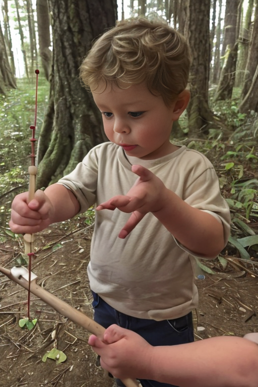
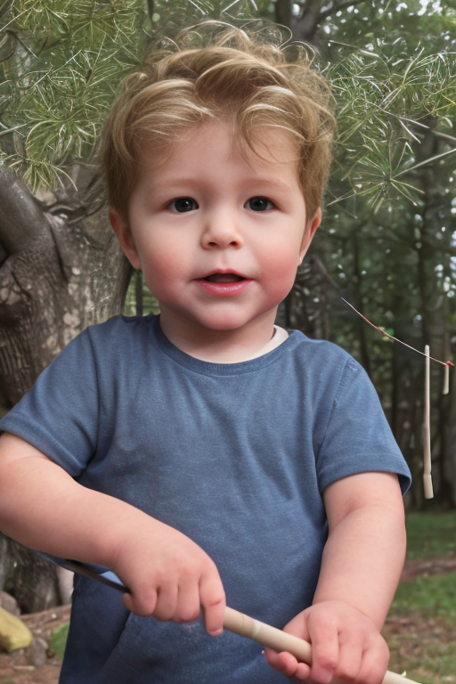

Stories
Once upon a time, in a quaint little village nestled between rolling hills, lived a curious and adventurous boy named Gavin. He was known for his insatiable curiosity and his unyielding spirit.
One sunny afternoon, as Gavin sat by the village pond watching the colorful fish swim, he spotted a shiny object glinting at the bottom. His heart raced with excitement as he imagined what treasure it could be!

With great care and determination, Gavin gathered some long sticks and tied them together to create a makeshift fishing rod. He then embarked on his quest to retrieve the mysterious object.

As Gavin approached the edge of the pond, he noticed an old, gnarled tree with a large knotted root jutting out over the water. With a determined look in his eyes, he cast his makeshift rod towards the tree and waited with bated breath.

Suddenly, there was a splash! Gavin's heart skipped a beat as he reeled in his line, his eyes wide with wonder as he beheld the most beautiful, iridescent stone he had ever seen.